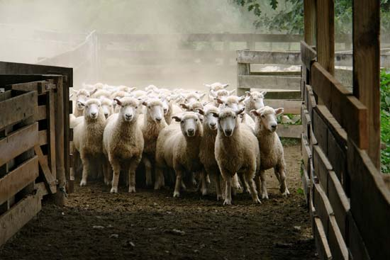

Top 5 Domestic Animals
Check National Geografic for domestic animalsDomestic goatThere are now more than 200 breeds of domestic goat (Capra aegagrus hircus). From tiny miniatures raised as pets to the silky cashmere goats whose coats are woven into luxurious textiles to nearly 300 pound animals bred for meat, all in a rainbow of colors and patterns, the physical diversity of the domestic goat approaches that of the dog. 
|
Domestic sheepThere are some 200 breeds of domestic sheep (Ovis aries), ranging from heavy wool producers that will overheat and die if not regularly shorn, to smooth, goat-like tropical varieties. Though the sheep’s herding behavior has made it synonymous with mindless tractability, some have shown remarkable signs of intelligence, including name recognition.  |
Domestic pigThe surly wild boar has been developed into some 70 breeds of domestic pig (Sus scrofa domesticus) from the immediately recognizable pink swine—à la Wilbur—to hairy, monstrous land breeds—domestic animals that have evolved to suit the conditions where they are found. Among the most maligned of domestic animals, pigs are nonetheless highly intelligent, and, if recent medical advances are any indication, they may be growing you a new heart. 
|
Domestic horseThere are over 200 breeds of horse (Equus caballus) as well as hundreds more local varieties unrecognized by breeding assocations. Though the success of films like Seabiscuit and War Horse testify to the continued valorization of the equine once worshipped as a god or goddess in some cultures, horse meat is still widely consumed. 
|
Domestic dogDog, (Canis lupus familiaris), domestic mammal of the family Canidae (order Carnivora). It is a subspecies of the gray wolf (Canis lupus) and is related to foxes and jackals The dog is one of the two most ubiquitous and most popular domestic animals in the world (the cat is the other). For more than 12,000 years it has lived with humans as a hunting companion, protector, object of scorn or adoration, and friend. 
|